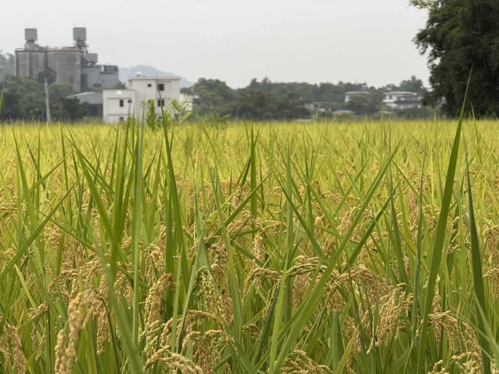
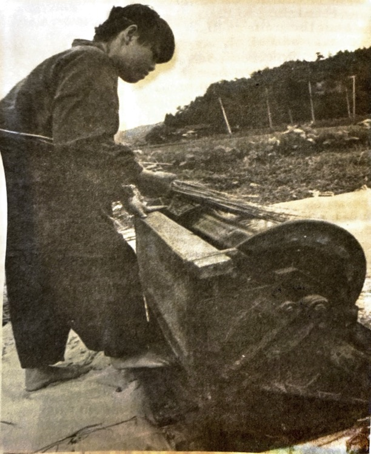

Noon Water
July 8, 2026
"Those two jugs are full of Noon Water," said 阿聰 (A'Cong), gesturing at two basketball-sized glass jugs filled with a clear liquid. "I collected them myself yesterday. You should brew your coffee with that."
I had never heard the Chinese word he just used for Noon Water. I stared at him blankly as I puzzled over the sounds in my brain.
"Uh-huh," I grunted, making a general sound of affirmation without being sure what we were talking about. Did he say Fifty Point water? Water of the Five Foods?1 I had no idea.
I was living with 阿聰 on his farm in 宜蘭 (Yilan), a county to the southeast of Taipei. It was just me and him, as his wife was away on vacation in China with his daughter. 阿聰 spoke no English and constantly used aphorisms I had never heard before. At first, I was apprehensive about asking what these phrases meant, fearing it would disrupt the flow of our conversation. By the end of the week I shed that fear, mainly because I couldn't riddle the phrases out. I resorted to asking him to type the characters into my phone.
That's how I learned what Noon Water (午時水) is. During Dragon Boat Festival, on the fifth day of the fifth lunar month, tradition states that the 陽氣 (solar energy) is at its peak during 午時 (the noon hour, 11 a.m. to 1 p.m.). Water collected at this hour has absorbed the absolute maximum amount of energy and can be drunk to ward off bad luck, heal the body, prevent weight gain, or brew exceptionally smooth tea. My primary research on the topic (i.e., drinking it) elicited no auspicious effects when combined with coffee.
阿聰
I've not met a young person who touts the benefits of Noon Water. I'm sure they are out there among the 23 million Taiwanese and 41 million Fujianese,2 I just haven't met them yet. Traditions of this sort are typically carried by the older generation, and 阿聰 was exactly that. With two children in their early twenties, I pegged him at late 50s, early 60s. He was born in 雙溪 (Shuang Xi), a rural district directly east of Taipei where his grandfather and father owned a farm. He said as a child he loved to play in the fields and around the farmhouse. "Play" is the key word there, because 阿聰 was careful to explain to me that he never helped out on the farm.
In the 90s, 阿聰 moved to Taipei and took a job selling computer equipment. It didn't take long for him to start reminiscing about the farm. He loved the outdoors, and his connection to 大自然 (literally Big Nature) was stifled in the streets of Taipei. This was also the "trash island" era of Taiwan3, and 阿聰 wanted to do more to protect the environment. Today, on the wall near his kitchen sink is the phrase 省水，救地球 (save water, save the Earth). In his farming practice, 阿聰 uses no pesticides and no herbicides on his farm. This has its drawbacks. His banana trees sometimes suffer from the fungus called "cigar end rot" and his pineapple plants are swimming in a sea of weeds. But, 阿聰's rice paddies don't have chemical runoff that flows into the watershed. He can also eat his papayas straight off the tree, just the way he likes: skin and all.

A few years into his job as a computer salesman, 阿聰 left in pursuit of work closer to his heart. There is a type of commerce in Asian countries called 團購 (group buying), where consumers will form a collective to buy shipments of food products at wholesale prices. 阿聰 found a role working at one of these companies, connecting with farmers and wholesalers and getting produce into the hands of consumers. This work was one step closer to the farm and therefore more meaningful to 阿聰. But it wasn't perfect. There were still schedules and offices, deadlines and managers. The freedom of Big Nature still eluded him.
So after a little over a decade in Taipei, 阿聰 packed up his wife, daughter, and son, and moved to 宜蘭 to reignite his passion. He found a home in 南澳 (Nan Ao), a tiny, two-stoplight town serviced by local trains and a once-daily express. He rented parcels of land to develop his farm. When I visited, 阿聰 had over 11 公頃 (a little over 110,000 square meters) on which he grows mostly sesame (~70%), black beans, rice, and miscellaneous fruits and vegetables. He now proudly calls his livelihood 阿聰自然田農場, which means 阿聰's Natural Farm. His wife has also built a small 民宿 (guesthouse) on the property which wears the name 水田屋民宿, meaning Rice Paddy Guesthouse.4
"Before, in the city, my work lacked 成就感 (a sense of achievement). Here, it is in everything I do." Those are 阿聰's words.
稻田 (rice paddy)
On the second morning after I arrived in 宜蘭, 阿聰 said we were going to the rice paddies. I grabbed my waterproof boots and threw my bag into the basket of my bicycle. 阿聰 looked down his nose at my boots. "You want to wear those in the 稻田 (rice paddy)? These are better," he said, pointing at his flip flops. I had always pictured farmers wearing knee-high boots as they tramped through the muck of a rice paddy, so had lugged mine here on the train from Taipei. Now I sheepishly swapped the boots for my plastic slip-ons and chased after 阿聰's truck on my bicycle.
This rice paddy bordered a small mountain on one side and a shrimp farm on the other. Just over the embankment, paddle wheel aerators trolled in the ponds under a rising sun. 阿聰 flipped his thongs to the side and jumped barefoot into the standing water. He never seemed off balance as he waded between the rice. I followed suit, stumbling after him with my bare feet sinking deep in the mud. He showed me how to effortlessly slide a hand sickle through the earth to cut weeds out at the root. Then he handed me the sickle, said "see you at lunch," and rumbled off in his truck.
Midday approached. I had already cut my feet in several places on buried snail shells. The standing water had been cool a few hours ago but was now the temperature of a lukewarm bath. My legs were caked with dirt and sweat. I straightened my aching back and plucked my feet from the mud with a sucking sound. On the other side of a raised pathway cutting through the middle of the farmland was an irrigation channel. 阿聰 said that the water on that side, which was rainwater from the adjacent mountain, was clean. I sat down on the edge of the road and plunged my feet into the current. The water was clear and cold. I exhaled an audible sigh of relief as my exhaustion temporarily abated. From my bag came a peach that 阿聰 had collected in his orchard that morning. I leaned back and surveyed the few square meters of farmland I had cleared in the last three hours, framed by the deep green vegetation of the jungle and the vibrantly blue sky. There was that feeling of 成就感 (achievement) that 阿聰 had described.
To be immersed in that much beauty, pierced by it, is the point.5
That was why I was here, too. To be under the sun, to feel the cool water on my feet, to work with my hands. I had no fear of the backbreaking work that came with life on a farm. In fact, I enjoyed it. I wanted to sweat and toil, then turn around and relish my handiwork. Later that week, when 阿聰 asked me to help him restore a foot-powered threshing machine, I drew on experience from my teenage years when my father and I finished the basement and replaced the wraparound deck of my childhood home. I wanted that tactile, "real work." I'd spent the better part of the last 10 years bent over a keyboard doing "knowledge work." There was no 成就感 in that. Now I needed to feel the physical fruit of my labor.
"Did you know if you place a stethoscope on the trunk of a tree, you can hear it drinking water?" 阿聰 said to me that night over dinner. I looked up from my boiled cabbage to find a gleam in his eyes. He really loved this life. I pictured him standing proudly in the rice paddy, the shadow of a smile on his lips as he reviewed his harvest and soaked up the land between his toes.

Thresher
阿聰 didn't know where the 14mm wrench was. He had a green plastic bucket which held an assortment of tools, including a ratchet without the sockets, scissors of different sizes, a rusted hammer, and a pruning saw. When we went to the mechanic to ask about fixing a seed drill, 阿聰 borrowed his 14mm socket. I don't know if he ever returned it.
I was tasked with replacing two pieces of wood on a threshing drum (the part of the threshing machine that rotates). I needed the 14mm wrench to pry loose the rusted bolts and reduce the drum to its component parts. The loaner socket and half a can of Liquid Wrench did the trick.
I measured the broken pieces of wood and then 阿聰 took me to see a young carpenter. The man's woodshop was on the backside of a café. It was beautiful. Sitting on a patio and open to the mountain behind, here was a human space integrated into a natural environment. The carpenter had hung pegboard along the interior wall to neatly arrange his tools. He took us behind the shop to where piles of neatly stacked wood waited their turn at the saw, then helped us select the right pieces before expertly cutting them to size and planing them to the correct thickness. He was methodical, exacting. When we returned to the farm, 阿聰 squeezed the new board between his legs and used the edge of a rotating drill bit to carve notches in the wood so it would fit to the drum.
I began assembly, slotting the new board into the hole where the broken ones were. The remaining boards in the drum were old, so old that the teeth mounted on them fell out as the machine rotated. I hammered those teeth back in as best I could, but with rotted wood in some places, this machine was on its last legs.

阿聰 was in a hurry, though. He wanted no part of replacing the other boards. He had scheduled an event with a local school that Friday morning to show a group of third graders (9 or 10 years old) how to harvest rice and thresh it in the machine. We still had to service another thresher before we took both to the school on Thursday evening.
I finished reassembly of the thresher on Wednesday night. Thursday morning came and 阿聰 asked me to build a net around the machine to catch flying rice grains and prevent a mess. He gave me free rein on construction and pointed to a pile of dry bamboo stalks behind the kitchen for materials. I gathered some pieces of varying sizes, then drilled holes through the thicker ones and slotted the thinner ones inside to secure them without nails or screws. Then I wrapped garden mesh around the outside, which I clipped down with binder clips.
That afternoon we loaded the two threshers into his truck and drove north to another small township. We stopped for dumplings at the local branch of a Taiwanese chain restaurant along the way. We spent the evening unloading the machines. School was letting out as we worked, and three girls lingered nearby, peering at us with curious eyes. 阿聰 invited them over to try using the machine. They giggled and squealed as the foot pedal went up and down and the threshing drum whirred. It was satisfying to see these girls interacting with the machine I'd labored over all week.
Over dinner, 阿聰 told me he had worked with this school before. Joy creased his eyes and he laughed softly as he described teaching the kids about his work. There was a deep sense of fulfillment in his words, one akin to what I had experienced hours before with the threshing machine.
The next morning we started early, and I brewed myself a cup of Noon Water coffee before we set out. At the school, a teacher, 阿聰, and I led the students to a rice paddy. After a brief introduction, 阿聰 challenged the students to a game: who could find the stalk with the most grains of rice on it? He stood on an embankment above the paddy and watched the students excitedly stream between the rice. I was in the field with the students and I looked up to catch a glimpse of 阿聰 framed against the sky. He looked down over the rice, the kids, and me. 成就感 was written all over his face.
- ↑ The character for five (五) sounds like the character for noon (午), and the character for time (時) sounds like the characters for ten (十) and food (食).
- ↑ This is the region of China across the strait from Taiwan, where many Taiwanese draw their ancestry. The Fujian culture also celebrates the many uses of Noon Water.
- ↑ Taiwan in the 90s had a trash crisis. The land was covered in plastic and rotting food, and international papers awarded Taiwan the moniker "Trash Island." Now, the island has one of the highest recycling rates in the world (50%+) and the trash disposal system is considered top tier.
- ↑ 民宿 is actually a Japanese loanword.
- ↑ From Barbarian Days by William Finnegan.
- ↑ Association of Waldorf Schools of North America, "Our Principles." Link